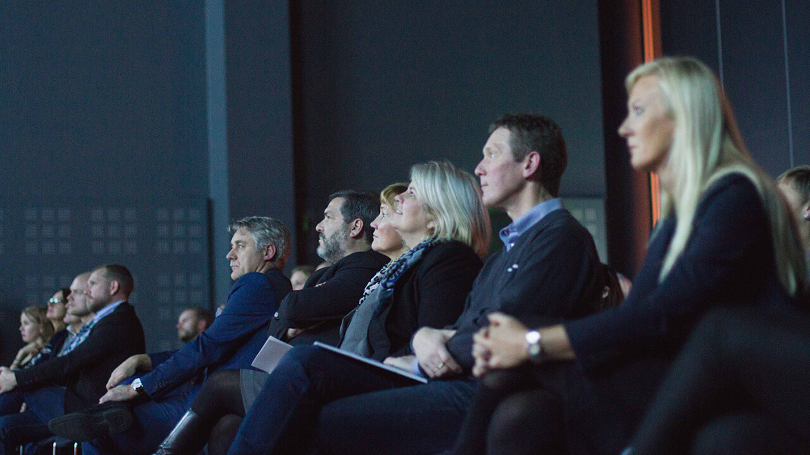

For the past four months I have been working as a designer and web developer at Riktig Spor (roughly translates to "Right Path") in Norway — and I hope to continue working here for my next semester. I work five days a week, covering a range of clients — from small websites to larger corporate ones. This article aims to cover the majority of these.See all the projects I contributed to
As a general preface to this section, I should mention my responsibilities. I am admittedly still a student, and with that I am still learning — which is also the ultimate goal of this work placement. However, I am the primary web developer at this company, and thus I quickly took on the responsibility of hosting, developing and designing websites and web applications. I also cover photography at times, and the role of the web advisor for clients.
See all the projects I contributed to and how I work.
The experience
I quickly had to widen my comfort zone in order to work efficiently. While I am comfortable developing relatively static sites, dynamic and editable content is a new world to me.
I believe I quickly adapted to this technology, and today I am developing Wordpress sites without much problem. I would refer to the projects to outline what I experienced specifically, and while I did continuously leave my comfort-zone, I have learned a lot this semester – and for that I am thankful.
Words from the general manager
As of September 2015, Magnus Skare has been employed as a full-time web designer at Riktig Spor. In his time here I have had the opportunity to see Magnus develop as a web designer and taking on new challenges. He has learned the operating procedures at Riktig Spor and accomplished all tasks in a timely manner.
Magnus has worked on several different cases. For certain cases he has participated as a team member and consultant for web related projects, while acting as the project manager for clients requesting new websites on other projects. He delivers on time, and pushes for development in the cases where he needs to.
Magnus is highly regarded for his web competence and skills. His expertise as a web consultant is developing, and his ability to communicate the intricacies of the web to “non-web-inhabitants” is improving.
We are very pleased with Magnus´ demeanor towards clients as well as co-workers. He is an asset to our agency, and we appreciate his work. At the moment Magnus is on a short-term contract, which we plan to renew for us to have him here for his next term also, while he finishes his studies. We have hopes that Magnus will be a long-term employee at Riktig Spor, and that we can have him in charge of our web focus in the future.
– Brita Bjørnbakk, General Manager
Magnus has given us a crucial set of skills, previously lacking at Riktig Spor. His technical competence and understanding has lifted our web-based products and contributed to increased client satisfaction.
Jofrid, Senior Communication Advisor
Magnus is talented and professional — it's always a pleasure to ask him for help in Wordpress.
Marita, Senior Graphic Designer
Working with Magnus is a great pleasure. He is accurate, eloquent and efficient. He brings to us much needed technical know-how, and really fits in at Riktig Spor.
Fredric, Project Manager
Reflection & conclusion
Looking back at the projects I contributed to, I am privileged, proud and humbled to be a part of this company. As the lone developer in a team of mainly designers, I feel valuable – which is incredibly heartwarming, as web development has been a passion for years now. Sure, I am still learning new things, but it is satisfying to have all those late nights learning JavaScript and CSS pay off.
The experience of working here so far has been great, and while I certainly do make mistakes on a regular basis, I learn from it and adapt – and they let me, which I believe is beneficial for both parties.
I have experienced great launch-events and undertaken small, medium and large-scale websites. I also had to explore the server-side aspect of the web, along with dynamic programming languages like PHP – both of which being fairly new to me. I hope to become more confident as time passes, but I will hopefully never slow down or stop learning new things.
See all my projects for Riktig Spor and how I worked.